Salamander AD
- System profili
- 5 komór
- Głębokość zabudowy
- 73 mm
- Ścianki zewnętrzne
- ponad 2,8 mm, klasa A
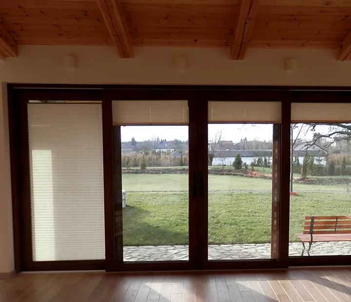
Okna PCV Salamander i Wital oraz drzwi przesuwne. Robimy je w Kozubszczyźnie pod Lublinem i sami montujemy, razem z parapetami i obróbką ościeży.
Profile renomowanych producentów, a do nich szyby, okucia, okleina i szprosy dobrane do domu. Doradzimy, który system ma sens w Państwa budynku.
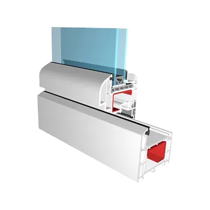
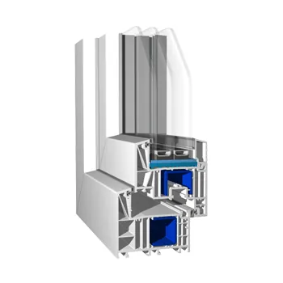
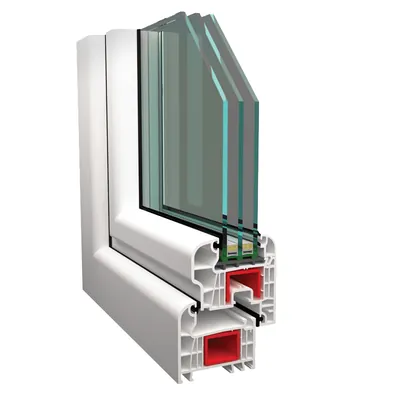
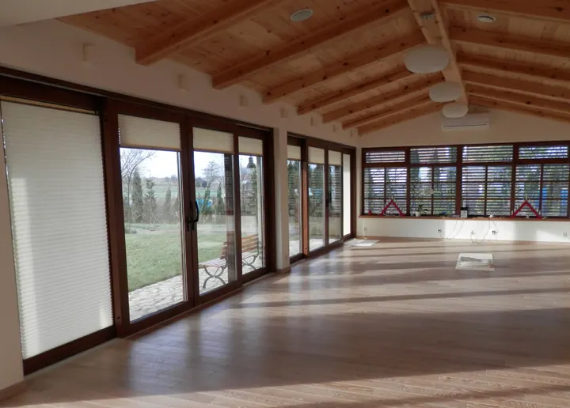
Skrzydło jedzie na kółkach po prowadnicach, a próg jest z aluminium, więc całość chodzi lekko i równo przez lata. Jeśli otwór jest nietypowy, wykonamy drzwi pod Państwa wymiar.
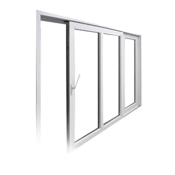
Drzwi montują te same ekipy, które montują nasze okna.
Okna i drzwi przesuwne montujemy na co dzień. W cenie montażu dostają Państwo wszystko, co w praktyce decyduje o tym, czy okno będzie szczelne i ciepłe.
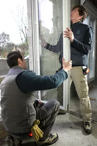
24 okleiny, od bieli po drewno i antracyt. Przesuń próbki, żeby zobaczyć wszystkie.
Ciepłochłonne pakiety, np. 4/16/4 LE: współczynnik U 1,4 W/m²K z powietrzem, lepszy z argonem. Mniej efektu zimnej szyby i roszenia.
Zaczepy antywłamaniowe, uchył regulowany w czterech stopniach i wietrzenie przez 6-milimetrową szczelinę bez wychładzania pokoju.
Międzyszybowe szczebliny w 24 wariantach: białe, złote, ołowiane, w kolorach drewna i RAL, od 8 do 26 mm.
Kilka realizacji z galerii. Na docelowej stronie będzie można je przeglądać według rodzaju zlecenia.
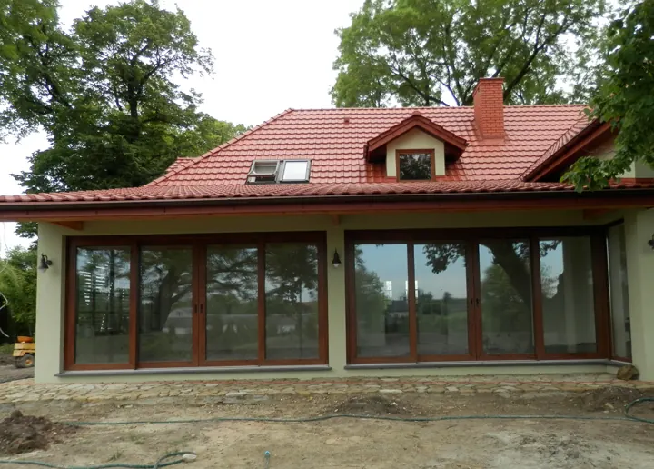
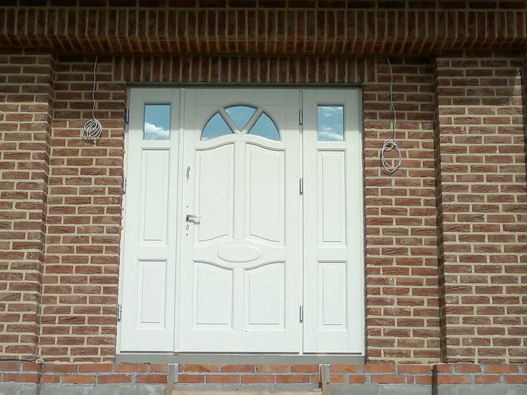
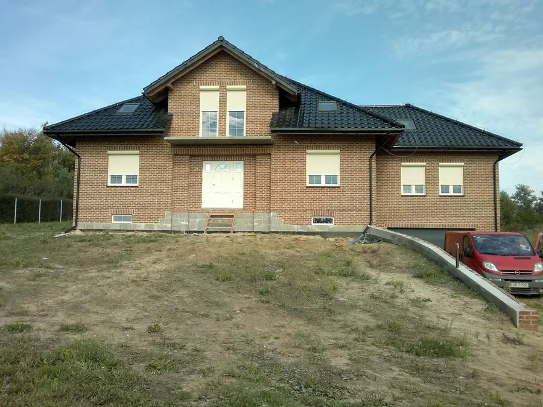
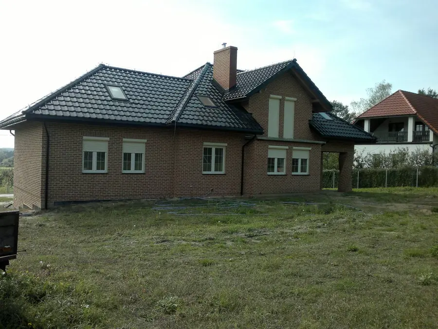
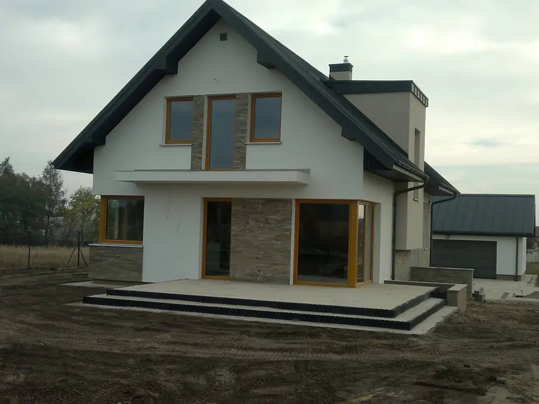
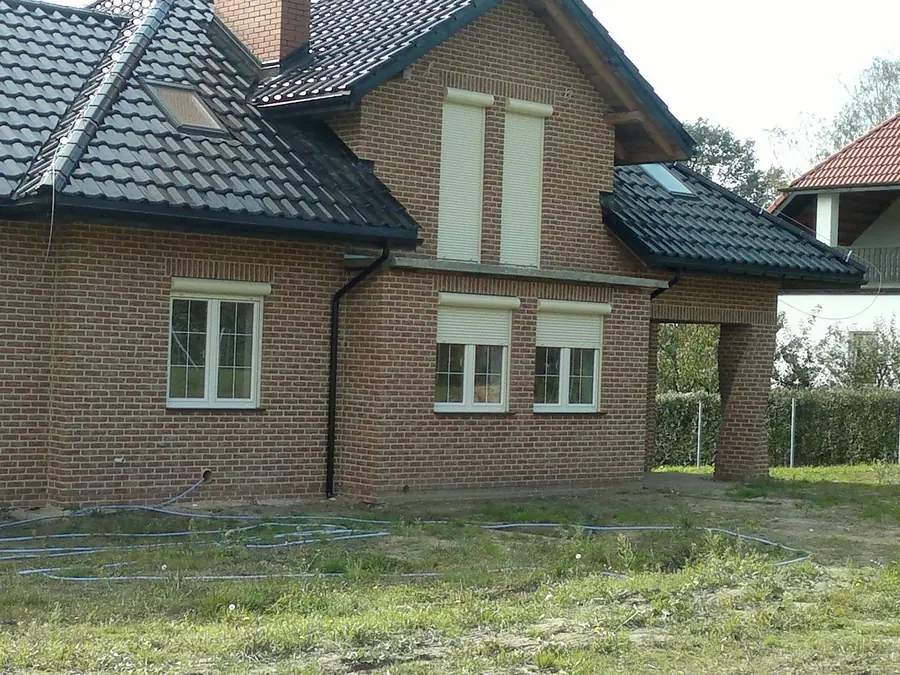
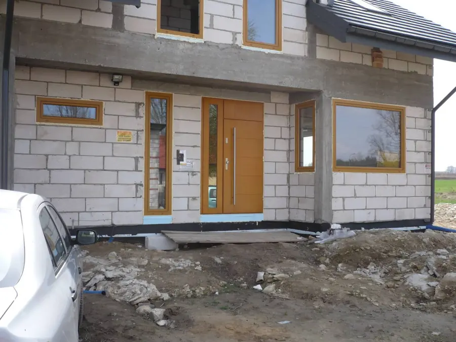
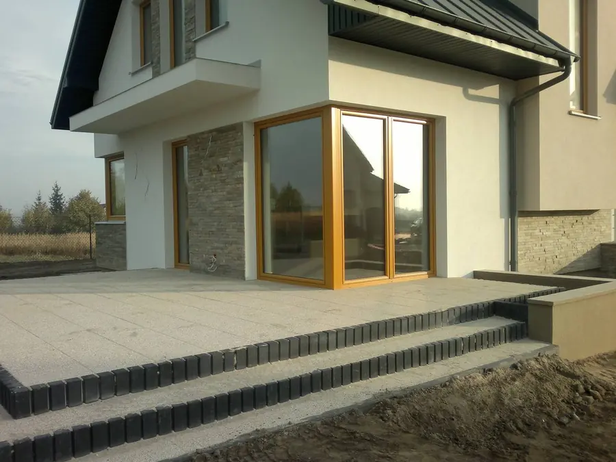
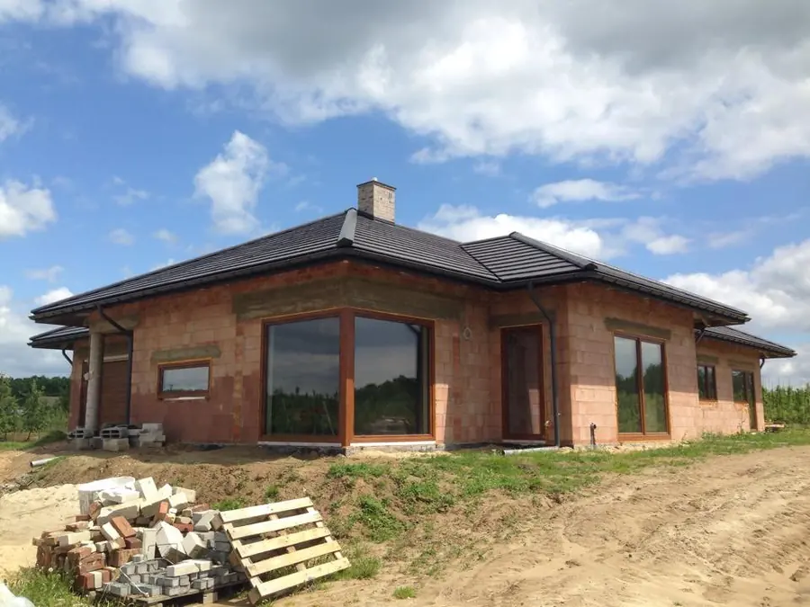
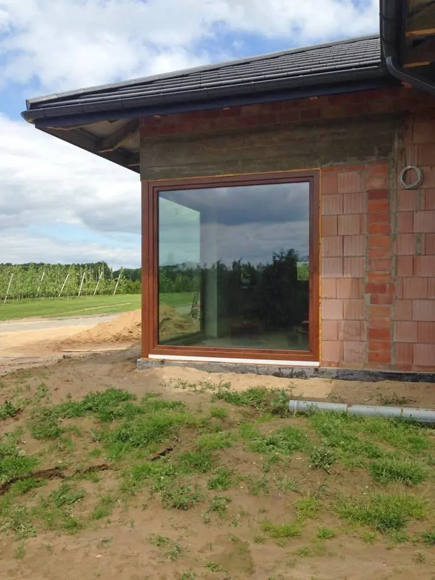
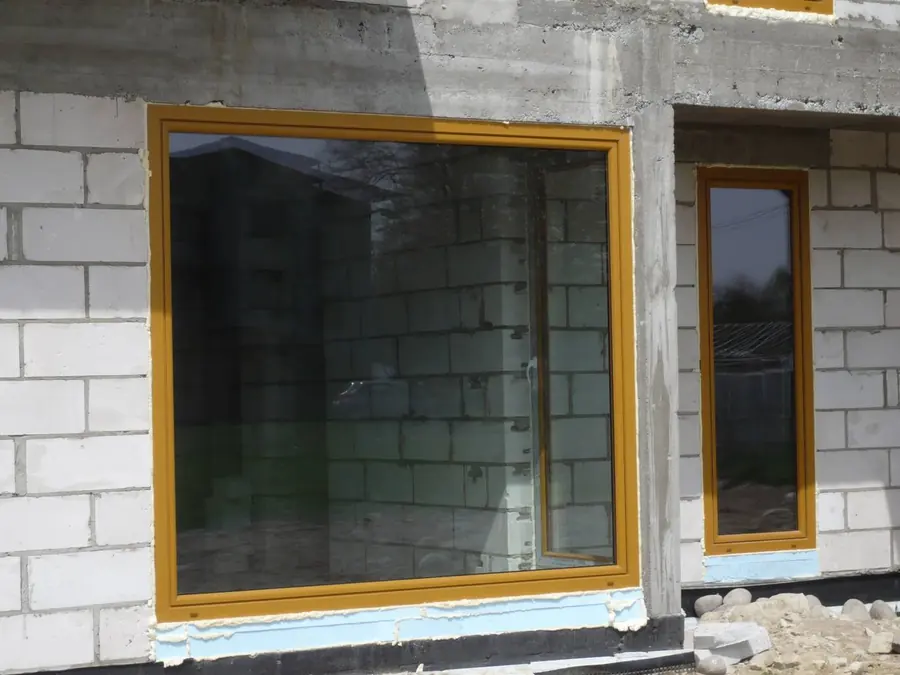
Art-Okna prowadzi Artur Boksa. W stolarce okiennej pracuje nieprzerwanie od 1994 roku: najpierw w firmie produkcyjnej, od 2001 roku jako jej współwłaściciel, a w 2006 roku założył własną Lubelską Fabrykę Okien.
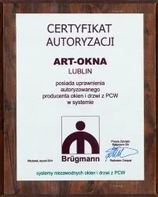
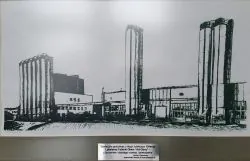
Podajcie Państwo liczbę i przybliżone wymiary okien, a my przygotujemy wycenę. Najszybciej ustalimy szczegóły telefonicznie.